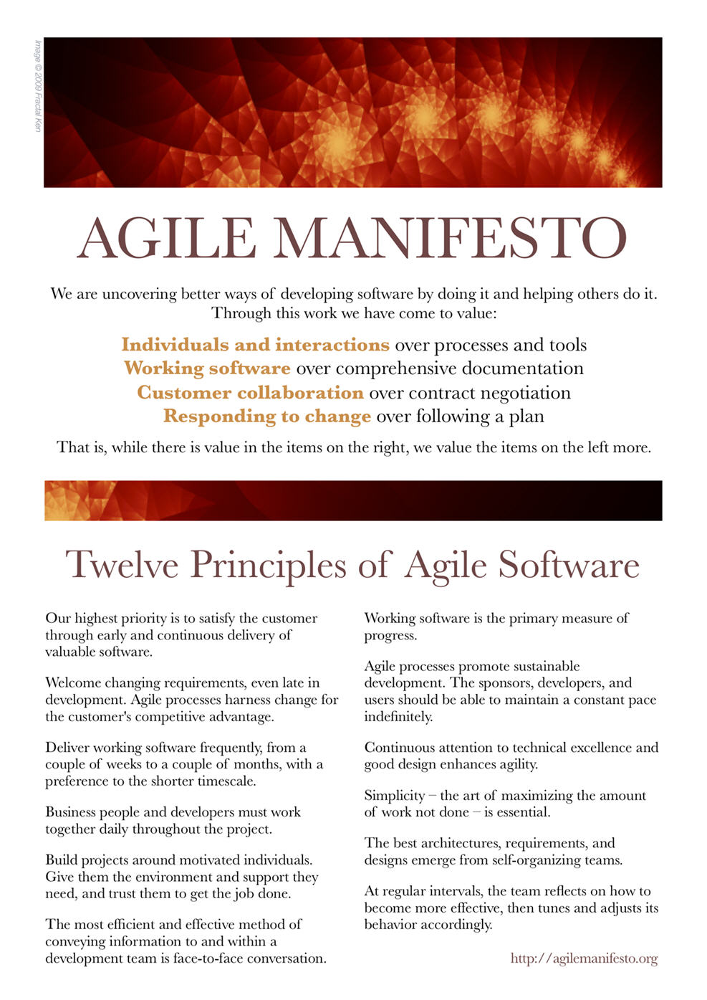

Agile Management: Fundamentals

Overview
Agile = speed and deftness
It is a philosophy and methodologies
While traditional project management wants to limit change (and scope creep), in the agile world, change is not only expected but embraced. Agile relates to quickly responding to changing conditions and rapidly generating project outcomes and deliverables that are necessary to compete in a fast-paced marketplace.
Agile Manifesto
Let's start out with the Agile Manifesto. As ProductPlan notes, "Agile Manifesto was published in February 2001 and is the work of 17 software development practitioners who observed the increasing need for an alternative to documentation-driven and heavyweight software development processes." (n.d.)
View the Manifesto for Agile Software
Development.

Iterative Project Management
At it's core, agile embraces iterative project management. This entails iterative design and development. It focuses on being adaptable and efficient. It subsequently requires intense collaboration, trust, and accountability.
References
O'Connor, S. W. (2020). Agile vs. Scrum: What's the Difference. Northeastern University Graduate Programs. Retrieved March 24, 2021 from https://www.northeastern.edu/graduate/blog/agile-vs-scrum/
ProductPlan. (n.d.). Agile Manifesto. Retrieved March 24, 2021 from https://www.productplan.com/glossary/agile-manifesto/
Wells, D. (2009). Agile Software Development: A gentle introduction. Retrieved March 24, 2021 from http://www.agile-process.org/
Zeil, S. (2019). Extreme Programming (XP). Retrieved March 24, 2021 from https://www.cs.odu.edu/~zeil/cs350/latest/Public/xprogram/index.html